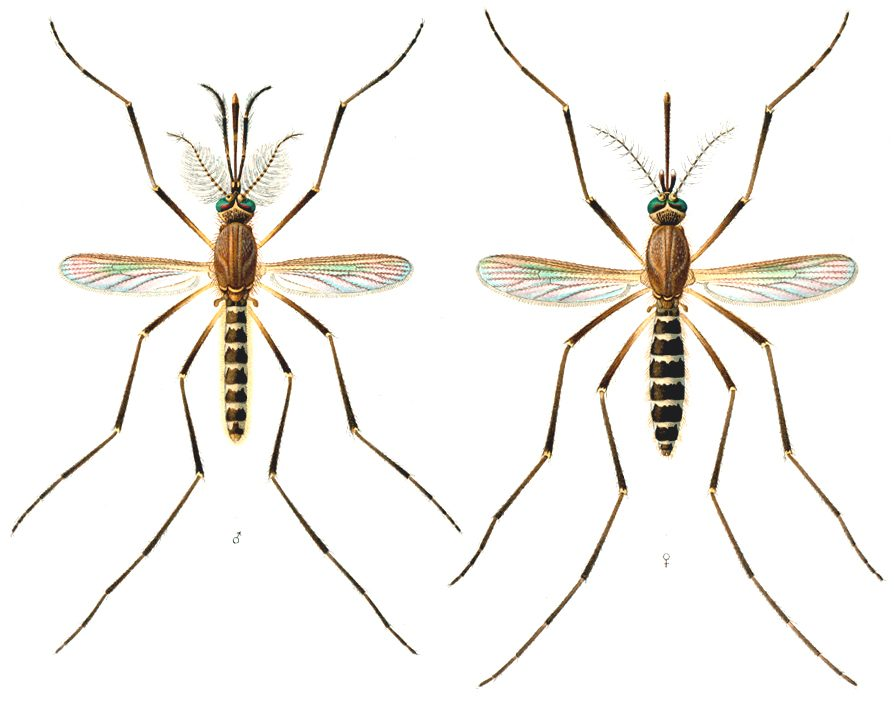

मच्छरSouthern House Mosquito
Culex quinquefasciatus · Culicidae · INS-0035

- Scientific name
- Culex quinquefasciatus Say, 1823
- Family
- Culicidae
- Hindi
- मच्छर
- Status here
- native
- IUCN
- not evaluated
When to look कब देखें
Present all year.
मच्छर / Southern House Mosquito
Culex quinquefasciatus Say, 1823 — Culicidae
मच्छर (घरेलू मच्छर / दक्षिणी गृह मच्छर) — पूर्वी उत्तर प्रदेश के घरों और शहरी व ग्रामीण बस्तियों में पाया जाने वाला एक अत्यंत आम और कष्टदायक निवासी कीट (mosquito) है। यह मुख्य रूप से रात के समय सक्रिय होता है और मादा मच्छर इंसानों व मवेशियों का खून चूसती हैं (hematophagous)। यह प्रजाति गंदे, ठहरे हुए पानी, खुले नालों और सीवेज के पानी में बड़े पैमाने पर प्रजनन करती है। यह पूर्वी उत्तर प्रदेश में हाथीपांव या फाइलेरिया (lymphatic filariasis) और वेस्ट नाइल वायरस (West Nile virus) जैसी गंभीर बीमारियों का मुख्य वाहक (vector) है। इसके जीवन चक्र में पानी में रहने वाले तैरते लार्वा, जिन्हें "रिंगलर" (wrigglers) कहा जाता है, बहुत विशिष्ट होते हैं।
Quick Identification त्वरित पहचान
| Feature | Description |
|---|---|
| Size | Small, delicate fly; body length 3.5–5.5 mm; wingspan 3–4.5 mm |
| Colouration | Dull brownish-grey or straw-colored overall; lacks bold black-and-white markings |
| Abdomen | Dark brown segments with narrow, creamy-white transverse bands at the base of each segment |
| Legs | Long, slender, uniformly dark brown without white rings or spots |
| Resting Posture | Rests parallel to the wall surface with the abdomen pointing slightly downward |
| Flight Sound | Produces a high-pitched, persistent whining buzz near the ears at night |
Field tip: Look on the walls of rooms or under furniture during the day. Watch for a medium-sized, dull brownish mosquito resting flat against the wall (unlike Anopheles which rests at a 45-degree angle). They produce a characteristic high-pitched whining sound in flight close to human ears at night.
Morphology आकारिकी
Biometrics (typical measurements for adult specimens in local households):
| Measurement | Range |
|---|---|
| Body length | 3.5–5.5 mm |
| Wing length | 3.0–4.5 mm |
Body details: The adult mosquito is small and slender. The head has a long, needle-like proboscis modified for piercing and sucking in females. The compound eyes are large and dark. The antennae are plumose (feathery) in males and pilose (simple) in females. The thorax is robust, dark brown, and covered with fine golden-brown scales. The wings are transparent with dark scales along the veins. The abdomen is dark brown with basal transverse bands of cream-colored scales on segments 2–7. The legs are long, thin, and brownish-black.
Behaviour & Ecology व्यवहार और पारिस्थितिकी
Nocturnal blood-feeder.
- Host seeking: Females are hematophagous, using carbon dioxide, body heat, and lactic acid odors emitted by mammals and birds to locate hosts in the dark.
- Diurnal resting: During the day, they rest in dark, humid, undisturbed corners of houses, such as behind curtains, under beds, and inside closets.
- Flight activity: Flight begins at dusk and peaks during the middle of the night. Males fly in swarms to attract females for mating.
Ecological Role पारिस्थितिक भूमिका
Trophic link and vector.
- Larval feeding: Aquatic larvae are filter feeders, consuming bacteria, micro-algae, and organic debris, helping to clarify organic waste in stagnant pools.
- Adult feeding: Males do not suck blood; they feed exclusively on flower nectar, acting as minor pollinators.
- Trophic connector: Serve as a massive food source for aquatic predators (fish, beetles) during larval stages, and aerial predators (bats, swallows, dragonflies) during adult stages.
Life Cycle / Phenology जीवन चक्र
- Breeding: Breeds continuously throughout the year, with numbers expanding rapidly during the hot and humid monsoon and post-monsoon seasons.
- Egg laying: The female lays eggs in rafts of 100–300. The eggs are glued together vertically and float on the water surface. Eggs hatch in 24–48 hours.
- Pupal stage: The pupa (tumbler) is comma-shaped, active, and aquatic. It does not feed, breathing through respiratory trumpets on the thorax. The adult emerges from the pupal skin in 24–36 hours.
Larval Stage
- Wriggler appearance: The larva (wriggler) is aquatic, 6–8 mm long, with a distinct head, a large thorax, and a segmented abdomen. It has a long, dark respiratory siphon on the 8th abdominal segment, which it uses to hang downwards at an angle from the water surface to breathe.
- Breeding habitat: Prefers stagnant, highly organic, and polluted water bodies such as open gutters, pit latrines, septic tanks, and flooded garbage pits.
- Larval duration: Pass through 4 instars over 6–8 days in warm weather.
Host Plants or Prey आहार
Adult female diet:
- Blood of humans, domestic cattle (Bos indicus), dogs, and wild birds.
Adult male diet:
- Flower nectar, plant sap, and fruit juices.
Larval diet:
- Planktonic bacteria, micro-algae, and organic detritus filtered from the water.
Predators / Natural Enemies शत्रु
- Larval predators: Larvivorous fish (such as guppies and Gambusia affinis), backswimmers, water striders (like [INS-0031 Indian Water Strider]), and dragonfly naiads.
- Adult predators: Insectivorous bats (such as [MAM-0014 Indian Pipistrelle]), spiders (like [SPD-0003 Pantropical Jumping Spider]), frogs, wall lizards, and swifts (like [BRD-0043 House Swift]).
Agricultural / Human Relevance कृषि प्रासंगिकता
Major public health vector.
- Disease transmission: This species is the primary vector of the nematode parasite Wuchereria bancrofti, which causes lymphatic filariasis (elephantiasis or फाइलेरिया), a disease characterized by extreme swelling of the legs. It also transmits West Nile virus and Japanese encephalitis.
- Nuisance: Causes severe sleep disruption in rural Basti due to persistent nighttime biting and buzzing.
- Management: Cleaning open drains, filling puddles, releasing larvivorous fish in village wells, and installing mesh screens and mosquito nets inside homes.
Expected Locally स्थानीय रूप से अपेक्षित
Not a field record. Written from published accounts for eastern Uttar Pradesh. No confirmed local sighting yet — if you have seen it, that is what the atlas needs.
अभी तक स्थानीय पुष्टि नहीं। यह विवरण प्रकाशित स्रोतों से है, किसी अवलोकन से नहीं।
Extremely common in all urban and rural blocks of Basti district. High populations are observed in congested residential areas with open drainage systems, such as near Basti railway station, Harraiya town, and rural cattle sheds (gaushala).
Distribution वितरण
Global range: Widespread throughout the tropical and subtropical regions of the world, particularly in South Asia, Africa, and the Americas.
In India: Present across all states, plains, and urban centres.
In Uttar Pradesh: Abundant resident in all human settlements.
In Basti district / eastern UP: Observed in large numbers across all populated blocks.
Research Questions शोध प्रश्न
Anyone can investigate these | कोई भी इन प्रश्नों की जाँच कर सकता है
- What is the average density of Culex mosquito larvae in open drains compared to village ponds in Basti? / बस्ती में खुले नालों की तुलना में ग्रामीण तालाबों में क्यूलेक्स मच्छर के लार्वा का औसत घनत्व क्या है? — Sample water using a standard dipper and count larvae.
- Does the local introduction of Gambusia fish significantly reduce mosquito larval counts in village step-wells? / क्या ग्रामीण कुओं में गैम्बूसिया मछली डालने से मच्छर के लार्वा की संख्या में कमी आती है? — Monitor larvae counts before and after introducing fish.
- At what time of the night is the biting activity of Culex quinquefasciatus at its peak in Basti homes? — Record landing counts on a volunteer at hourly intervals overnight.
- What is the preferred height of resting for adult mosquitoes on indoor walls during the daytime? — Measure and record wall resting heights in five households.
- Can children search for water puddles or open containers around their homes and check if they contain tiny swimming wigglers? — An educational activity to identify and eliminate household breeding sites.
Similar Species मिलती-जुलती प्रजातियाँ
| Species | Key Difference | हिंदी |
|---|---|---|
| Anopheles stephensi (Malaria Mosquito) | Rests at a 45-degree angle to the surface; spotted wings; breeds in clean water | मलेरिया मच्छर — तिरछा बैठना, साफ़ पानी |
| Aedes aegypti (Dengue Mosquito) | Lyre-shaped white markings on thorax; white-ringed legs; active during day; breeds in clean water | डेंगू मच्छर — चित्तीदार पैर, दिन में सक्रिय |
| Culex tritaeniorhynchus (JE Mosquito) | Smaller size; has a distinct pale ring on the middle of the proboscis; vector of Japanese Encephalitis | जेई मच्छर — सूँड पर पीली पट्टी |
Field rule: Small size (~3.5–5.5 mm), uniform dull brownish-grey color without white leg rings, resting parallel to walls, and active at night with a high whine, identify the Southern House Mosquito.
Taxonomy & Classification वर्गीकरण
Original description. Thomas Say described the Southern House Mosquito as Culex quinquefasciatus in 1823 in Journal of the Academy of Natural Sciences of Philadelphia (Vol. 3, p. 10). The type locality was the United States (widespread globally). The genus name Culex is Latin for "gnat" or "mosquito". The specific name quinquefasciatus is Latin for "five-banded", referring to the abdominal markings.
Subspecies. Monotypic — no subspecies are currently recognized.
Family and order placement. Placed in the order Diptera, suborder Nematocera, family Culicidae, subfamily Culicinae.
Phylogenetic notes. Culex quinquefasciatus is part of the Culex pipiens species complex, representing a lineage of highly adaptable, human-associated mosquitoes that diversified globally with the growth of sewage infrastructure.
IUCN status rationale. Not evaluated (NE) by the IUCN Red List. It is a highly abundant global pest species with no conservation concerns.
Photo Gallery फोटो गैलरी
References संदर्भ
- Say, T. (1823). Descriptions of dipterous insects of the United States. Journal of the Academy of Natural Sciences of Philadelphia, 3, 9-54. [original description]
- Christophers, S. R. (1933). The Fauna of British India, including Ceylon and Burma. Diptera. Vol. 4. Family Culicidae. Tribe Anophelini. Taylor and Francis, London.
- Barraud, P. J. (1934). The Fauna of British India, including Ceylon and Burma. Diptera. Vol. 5. Family Culicidae. Tribes Megarhinini and Culicini. Taylor and Francis, London, p. 420.
- Mani, M. S. (1968). General Entomology. Oxford & IBH Publishing Co., New Delhi.
- ZSI Checklist — Culicidae of Uttar Pradesh (2014).
- GBIF Occurrence Data — Culex quinquefasciatus, Uttar Pradesh (2010–2025).
Source file: species/fauna/insects/culex_mosquito.md